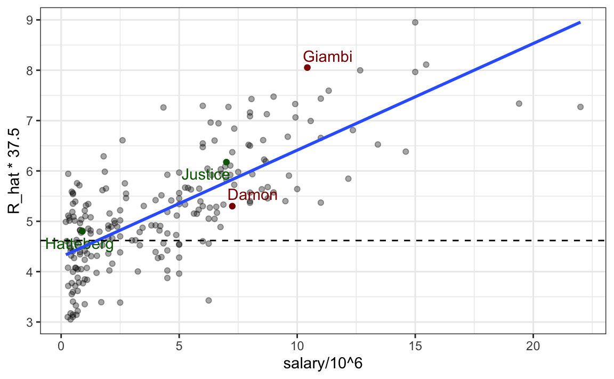

20 Multivariable Regression
Since Galton’s original development, regression has become one of the most widely used tools in data analysis. One reason is that an adaptation of the original regression approach, based on linear models, permits us to find relationships between two variables taking into account the effects of other variables that affect both. This has been particularly popular in fields where randomized experiments are hard to run, such as economics and epidemiology.
When we are unable to randomly assign each individual to a treatment or control groups, confounding becomes particularly prevalent. For instance, consider estimating the effect of eating fast foods on life expectancy using data collected from a random sample of people in New York City. Fast food consumers are more likely to be smokers, drinkers, and have lower incomes. Consequently, a naive regression model may lead to an overestimate of the negative health effects of fast food. So, how do we account for confounding in practice? In this chapter, we learn how multivariable regression can help with such situations and can be used to describe how one or more variables affect an outcome variable. We illustrate with a real-world example in which data was used to help pick under appreciated players to improve a resource-limited sports team.
20.1 Case study: Moneyball
Moneyball: The Art of Winning an Unfair Game by Michael Lewis focuses on the Oakland Athletics (A’s) baseball team and its general manager, Billy Beane, the person tasked with building the team.
Traditionally, baseball teams had used scouts to help them decide what players to hire. These scouts evaluate players by observing them perform, tending to favor athletic players with observable physical abilities. For this reason, scouts generally agree on who the best players are and, as a result, these players are often in high demand. This in turn drives up their salaries.
From 1989 to 1991, the A’s had one of the highest payrolls in baseball. They were able to hire the best players and, during that time, were one of the best teams. However, in 1995, the A’s team owner changed and the new management cut the budget drastically, leaving then general manager, Sandy Alderson, with one of the lowest payrolls in baseball: in 2002 the Yankees’ payroll of $125,928,583 more than tripled the Oakland A’s payroll of $39,679,746. The A’s could no longer afford the most sought-after players. As a result, Alderson began using a statistical approach to find inefficiencies in the market. Alderson was a mentor to Billy Beane, who succeeded him in 1998 and fully embraced data science, as opposed to relying exclusively on scouts, as a method for finding low-cost players that data predicted would help the team win. Today, this strategy has been adapted by most baseball teams. As we will see, regression plays a significant role in this approach. In this section, we will illustrate how data can be used to support this approach.
20.1.1 Baseball data
Statistics have been recorded in baseball since its beginnings. The dataset we will be using, included in the Lahman library, goes back to the 19th century. For example, a summary statistic we will describe soon, the batting average (AVG), has been used for decades to summarize a player’s success. Other statistics1, such as home runs (HR) and runs batted in (RBI) are reported for each player in the game summaries included in the sports section of news outlets, with players rewarded for high numbers. Although summary statistics such as these were widely used in baseball, data analysis per se was not. These statistics were arbitrarily chosen without much thought as to whether they actually predicted anything or were related to helping a team win.
This changed with Bill James2. In the late 1970s, he started publishing articles describing more in-depth analysis of baseball data. He named the approach of using data to determine which outcomes best predicted if a team would win sabermetrics3. Yet until Billy Beane made sabermetrics the center of his baseball operation, Bill James’ work was mostly ignored by the baseball world. Today, sabermetrics is no longer confined to baseball; its principles have spread to other sports, where it is now known as sports analytics.
In this chapter, we will conduct a data analysis to evaluate whether one of Billy Beane’s key strategies—hiring players who “get on base”, holds up statistically. We will break down what this concept means, and through the lens of multivariable regression, demonstrate that it was not only statistically valid but also an economically effective approach. To understand the analysis, we will need to learn a bit about how baseball works.
20.1.2 Baseball basics
To understand how regression helps us find undervalued players, we don’t need to delve into all the details of the game of baseball, which has over 100 rules. Here, we distill the basic knowledge necessary for effectively addressing the data science challenge.
The goal of baseball is simple: score more runs (points) than the other team. A player scores a run by starting at a spot called home plate, passing three bases in order (first, second, and third), and returning to home plate. The game begins with the opposing team’s pitcher throwing the ball toward the batter, who stands at home plate and tries to hit the ball. If the batter hits the ball far enough to run around all three bases and back to home plate in one play, this is called a home run4. If the batter doesn’t hit a home run, theystop at one of the bases. From there, they wait for their teammates to hit the ball so they can move to the next base. If the pitcher throws poorly, the batter gets to walk to first base as a penalty for the pitcher, referred to as base on balls (BB). A player on a base can try to run to the next base without waiting for a teammate’s hit. This is called stealing a base5 (SB).
Batters can also fail to reach base, resulting in an out. Another way to make an out is a failed attempt at stealing a base. Each team continues batting until they accumulate three outs. Once this happens, the other team takes their turn to bat. Each team gets nine turns, called innings, to score runs.
Each time a batter attempts to reach base, with the goal of eventually scoring a run, it is referred to as a plate appearance (PA). There are, with rare exceptions, five ways a plate appearance can be successful:
- Single – The batter reaches first base.
- Double – The batter reaches second base.
- Triple – The batter reaches third base.
- Home Run (HR) – The batter circles all bases and returns to home plate.
- Base on Balls (BB) – The pitcher throws poorly, and the batter is allowed to go to first base as a penalty for the pitcher.
The first four outcomes (Single, Double, Triple, and HR) are all considered hits, while a BB is not. This distinction is important for understanding the data and analysis that follow.
20.1.3 No awards for base on balls
Historically, the batting average has been considered the most important offensive statistic. To define this average, we divide the total number of hits (H) by the total number of at bats (AB) defined as the number of times you either get a hit or make an out; BB are excluded. Today, this success rate ranges from 20% to 38%.
One of Bill James’ first important insights is that the batting average ignores BB, but a BB is a success. Instead of batting average, James proposed the use of the on-base percentage (OBP), which he defined as (H+BB)/PA, or simply the proportion of plate appearances that don’t result in an out, a very intuitive measure. He noted that a player that accumulates many more BB than the average player might go unrecognized if the batter does not excel in batting average.
But is this player not helping produce runs? No award is given to the player with the most BB. However, bad habits are hard to break and baseball did not immediately adopt OBP as an important statistic. We can use data to try and make a case that BB do indeed help produce runs and should be valued.
20.1.4 Usign baseball data
To illustrate how data can be used to answer questiosn in Baseball we start with a simple example. We will compare BB to stolen bases (SB). In contrast to BB, total SB were considered important and an award6 given to the player with the most. But players with high totals of SB also made more outs as they did not always succeed. Does a player with high SB total help produce runs? Can we use data to determine if it’s better to pay for players with high BB or high SB?
One of the challenges in this analysis is that it is not obvious how to determine if a player produces runs because so much depends on his teammates. Although we keep track of the number of runs scored by a player, remember that if player X bats right before someone who hits many HR, batter X will score many runs. Note these runs don’t necessarily happen if we hire player X, but not his HR hitting teammate.
However, we can examine team-level statistics. How do teams with many SB compare to teams with few? How about BB? Let’s examine some data! We start by creating a data frame with statistics from 1962 (the first year all teams played 162 games, like today, instead of 154) to 2001 (the year before the team featured in Money Ball was constructed). We convert the data to a per game rate, because a small proportion of seasons had less games than usual due to strikes, and some teams played extra games due to tie breakers. We also define a singles column for later use.
Now let’s start with a obvious question: do teams that hit more HR score more runs?
dat |> ggplot(aes(HR, R)) + geom_point(alpha = 0.5)The plot shows a strong association: teams with more HR tend to score more runs. Now let’s examine the relationship between stolen bases and runs:
dat |> ggplot(aes(SB, R)) + geom_point(alpha = 0.5)Here the relationship is not as clear.
Finally, let’s examine the relationship between BB and runs:
dat |> ggplot(aes(BB, R)) + geom_point(alpha = 0.5)Here again we see a clear association. But does this mean that increasing a team’s BB causes an increase in runs? As we learned in Chapter 19, association is not causation. In fact, it looks like BB and HR are also associated:
dat |> ggplot(aes(HR, BB)) + geom_point(alpha = 0.5)We know that HR cause runs because when a player hits a HR, they are guaranteed at least one run. Could it be that HR also cause BB and this makes it appear as if BB cause runs? Are BB cofounded with HR? Linear regression can help us parse out the information and quantify the associations. This, in turn, will aid us in determining what players to recruit. Specifically, we will try to predict things like how many more runs will a team score if we increase the number of BB, but keep the HR fixed?
20.1.5 Regression applied to baseball statistics
Can we use regression with these data? First, notice that the HR and runs data, shown above, appear to be bivariate normal. Specifically, qqplots confirm that the normal approximation for runs for each HR strata is useful here:
dat |> mutate(hr_strata = round(scale(HR))) |>
filter(hr_strata %in% -2:3) |>
ggplot() +
stat_qq(aes(sample = R)) +
facet_wrap(~hr_strata) So we are ready to use linear regression to predict the number of runs a team will score, if we know how many HR the team hits using regression:
The regression line can be plotted using the geom_smooth function:
dat |> ggplot(aes(HR, R)) + geom_point(alpha = 0.5) + geom_smooth(method = "lm")The slope is 1.86. This tells us that teams that hit 1 more HR per game than the average team, score 1.86 more runs per game than the average team. Given that the most common final score is a difference of one run, this can certainly lead to a large increase in wins. Not surprisingly, HR hitters are very expensive. Because the As were working on a budget, they needed to find some other way to increase wins. In the next section we examine this more carefully.
20.2 Confounding
Previously, we noted a strong relationship between Runs and BB. If we find the regression line for predicting runs from BB, we a get slope of:
bb_slope <- lm(R ~ BB, data = dat)$coef[2]
bb_slope
#> BB
#> 0.743Does this mean that if we go and hire low salary players with many BB, and who increase the number of walks per game by 2, our team will score 1.5 more runs per game? Association is not causation: although the data shows strong evidence that a team with two more BB per game than the average team, scores 1.5 runs per game, this does not mean that BB are the cause.
Note that, if we compute the regression line slope for singles, we get:
lm(R ~ singles, data = dat)$coef[2]
#> singles
#> 0.452which is a lower value than what we obtain for BB. Remember that a single gets you to first base just like a BB. Baseball fans will point out that with a single, runners on base have a better chance of scoring than with a BB. So how can BB be more predictive of runs? The reason is because of confounding.
Here we show the correlation between HR, BB, and singles:
HR and BB are highly correlated! Experts will point out that pitchers are intimidated by players that excel at hitting HR and this leads to the bad performance that awards batters BB. As a result, HR hitters tend to have more BB, and a team with many HR will also have more BB. Although it may appear that BB cause runs, it is actually the HR that cause most of these runs. BB are confounded with HR. Nonetheless, could it be that BB still help? To find out, we somehow have to adjust for the HR effect. Multivariable regression can help with this.
A first approach is to keep HR fixed at a certain value and then examine the relationship between BB and runs. As we did when we stratified fathers by rounding to the closest inch, here we can stratify HR per game to the closest tenth. We filter out the strata with few points, to avoid highly variable estimates, and then make a scatterplot for each strata:
dat |> mutate(hr_strata = round(HR, 1)) |>
filter(hr_strata >= 0.4 & hr_strata <= 1.2) |>
ggplot(aes(BB, R)) +
geom_point(alpha = 0.5) +
geom_smooth(formula = "y~x", method = "lm") +
facet_wrap(~hr_strata) Once we stratify by HR, these slopes are substantially reduced:
Remember that the regression slope for predicting runs with BB was 0.7.
The slopes are reduced, but they are not 0, which indicates that BB are helpful for producing runs, just not as much as suggested by the single variable analysis. In fact, the values above are closer to the slope we obtained from singles, 0.5, which is more consistent with our intuition. Since both singles and BB get us to first base, they should have about the same predictive power.
Although our understanding of the application tells us that HR cause BB, but not the other way around, we can still check if stratifying by BB makes the effect of BB go down. To do this, we use the same code except that we swap HR and BB. In this case, the slopes do not change much from the original:
They are reduced slightly from 1.86, which is consistent with the fact that BB do in fact cause some runs.
Regardless, it seems that if we stratify by HR, we have bivariate distributions for runs versus BB. Similarly, if we stratify by BB, we have approximate bivariate normal distributions for HR versus runs.
20.3 Multivariable regression
It is somewhat complex to be computing regression lines for each strata. We are essentially fitting models like this:
\[ \mathrm{E}[R \mid BB = x_1, \, HR = x_2] = \beta_0 + \beta_1(x_2) x_1 + \beta_2(x_1) x_2 \]
with the slopes for \(x_1\) changing for different values of \(x_2\) and the other way around. But is there an easier approach?
If we take random variability into account, the slopes in the strata don’t appear to change much. If these slopes are in fact the same, this implies that \(\beta_1(x_2)\) and \(\beta_2(x_1)\) are constants. This, in turn, implies that the expectation of runs conditioned on HR and BB can be written as follows:
\[ \mathrm{E}[R \mid BB = x_1, \, HR = x_2] = \beta_0 + \beta_1 x_1 + \beta_2 x_2 \]
This model suggests that, if the number of HR is fixed at \(x_2\), we observe a linear relationship between runs and BB with an intercept of \(\beta_0 + \beta_2 x_2\). Our exploratory data analysis suggested that this is the case. The model also suggests that as the number of HR grows, the intercept growth is linear as well and determined by \(\beta_1\). In this analysis, referred to as multivariable regression, you will often hear people say that the BB slope \(\beta_1\) is adjusted for the HR effect.
Because the data is approximately normal and conditional distributions were also normal, we are justified in using a linear model:
\[ Y_i = \beta_0 + \beta_1 x_{i,1} + \beta_2 x_{i,2} + \varepsilon_i \]
with \(Y_i\) runs per game for team \(i\), \(x_{i,1}\) BB per game, \(x_{i,2}\) the HR per game, and \(\varepsilon_i\) assumed to be independent and identically distributed.
To use lm here, we need to let the function know we have two predictor variables. We use the + symbol as follows:
When we fit the model with only one variable, the estimated slopes were 0.39 and 0.39 for BB and HR, respectively. Note that when fitting the multivariable model both go down, with the BB effect decreasing much more.
You are ready to do exercises 1-12, if you want to practice before continuing.
20.4 Baseball analytics
In the previous section, we used multivariable regression to confirm that walks (BB) are a significant predictor of runs scored. In this section, we will take a data-driven approach to develop a metric for ranking the offensive production of baseball players. Specifically, we will construct a regression model to predict the number of runs a player contributes based on their offensive statistics. By incorporating salary information into this analysis, we can identify players in 2002 who were projected to generate runs but were under-compensated. Importantly, this analysis uses data that excludes the 2002 season to mimic the challenge of building a team for the upcoming season.
At the individual player level, distinguishing between runs scored and runs produced is crucial for accurately assessing offensive contributions. While runs scored are directly recorded, they don’t fully capture the extent of a player’s impact. For instance, if player X hits a single and later scores on a teammate’s home run, the run is attributed to player X, but the teammate’s effort was essential in making it happen. This overlap highlights the shared nature of offensive production, complicating individual performance analysis.
To address this, we will first fit the model at the team level, where such individual-level nuances average out and do not affect overall results. Once the model is validated for teams, we will apply it to estimate contributions at the player level.
Teams are divided into two leagues, American and National. Since they had slightly different rules during the period in question, we will fit the model only to the American League (AL), where the Oakland A’s played.
Since teams accumulate significantly more plate appearances than individual players, we will model per plate appearance (PA) rates. This allows us to generalize the model fit to teams and apply it to players. Additionally, since triples are relatively rare, we will combine them with doubles into a single category, extra bases (XB), to simplify the model. Stolen bases will be excluded because prior analyses suggest they do not reliably correlate with increased scoring. As a result, the predictors in the model will include: base on balls (BB), singles, extra bases (XB) and home runs (HR). The data preparation step for this model is shown below:
To build the model, we make a reasonable assumption that our outcome variable (runs per plate appearance) and the four predictor variables (BB, singles, extra bases, and home runs) are jointly normal. This implies that for any one predictor, the relationship with the outcome is linear when the other predictors are held constant. Under this assumption, the linear regression model can be expressed as:
\[ Y_i = \beta_0 + \beta_1 x_{i,1} + \beta_2 x_{i,2} + \beta_3 x_{i,3}+ \beta_4 x_{i,4} + \varepsilon_i \]
where \(Y_i\) represents runs produced per plate appearance, and \(x_{i,1}, x_{i,2}, x_{i,3}, x_{i,4}\) represent BB, singles, extra bases, and HR per plate appearance, respectively.
We can fit the model to data before the 2002 season, since we are building a team for 2002 with the information we had before the season started:
We can use the fitted model to predict run production for each team:
Note that this model, fit to 1962 to 2001 data, predicts runs for 2002 very well:
We also observe that Oakland, despite being one of the lowest-spending teams, managed to perform as an above-average offensive team. Additionally, note that the fitted model assigns similar weight to BB and singles:
fit$coefficients[-1]
#> BB singles XB HR
#> 0.454 0.586 0.914 1.452Now let’s apply the model to players. The Batting data frame includes player specific statistics. We prepare the data so that we save the same per-PA rates the model was fit to. Because players abilities change through time we only use data close to 2002 but to improve the precision of our estimates we use data from the three years before 2002, rather than just 2001. We also remove players with less than 100 PA to avoid imprecise summaries:
Now that statistics are in per-PA rates, we can use the model fitted to team-level data to predict how many runs per plate appearce each player will produce:
players$R_hat <- predict(fit, players)Next we use the Salary, People,Apperances data frames to add information we need for the rest of the analysis.
We start by adding the salary each player garnered in 2002 and remove players that did not play that year:
players <- Salaries |>
filter(yearID == 2002) |>
select(playerID, salary) |>
right_join(players, by = "playerID") |>
filter(!is.na(salary))We then add their first and last names for context. Additionally, because Major League Baseball players cannot negotiate their contracts or choose the team they play for until they have accumulated six years of playing time and become free agents, we include their debut year as we need to take this into consideration in our analysis.
players <- People |>
select(playerID, nameFirst, nameLast, debut) |>
mutate(debut = year(as.Date(debut))) |>
right_join(players, by = "playerID")Finally, we remove pitchers since we are only interested in batters.
If you followed baseball during the era in question you will recognize the top run producers and not be surprised that garnered high salaries:
players |> select(nameFirst, nameLast, R_hat, salary) |>
arrange(desc(R_hat)) |> head()
#> # A tibble: 6 × 4
#> nameFirst nameLast R_hat salary
#> <chr> <chr> <dbl> <int>
#> 1 Barry Bonds 0.239 15000000
#> 2 Todd Helton 0.218 5000000
#> 3 Manny Ramirez 0.216 15462727
#> 4 Jason Giambi 0.215 10428571
#> 5 Larry Walker 0.213 12666667
#> # ℹ 1 more rowNote that because each team has, on average, 37.5 plate appearances a game, a rate of 0.24 runs per plate appearance translates to 9 runs a game, almost double the league average!
If we plot predicted runs produced versus salary we can see that there is substantial variation across players in predicted runs produced and that, not surprisingly, players that produce runs garner higher salaries.

The plot also highlights four players. Before the 2002 season Oakland lost their best run producer, Jason Giambi, because they could not compete with the New York Yankees offer of over 10 million salary. Johnny Damon, another above average run producers (the dashed line shows the average) also left as Oakland was not willing to pay the 7.25 million salary the Boston Red Sox offered him. Oakland had to make up for this run production, but with a very limited budget. To do this, their first addition was Scott Hatterberg, whose salary was only $900,000, one of the lowest in the league, yet was predicted to produce more than average runs. Note that among the players in our data frame, Hatterberg while having a below league average AVG, ranked near the top 10% in BB per plate appearance. Similarly, David Justice had a near league average AVG, but ranked near the top 5% in terms of BB per plate appearance. These savings permitted the As to upgrade one of their current players, Frank Menechino, for Ray Durham.
filter(players, playerID %in% c("damonjo01", "giambja01", "menecfr01")) |>
bind_rows(filter(players, playerID %in% c("justida01", "durhara01", "hattesc01"))) |>
select(nameFirst, nameLast, AVG, BB, R_hat)
#> # A tibble: 6 × 5
#> nameFirst nameLast AVG BB R_hat
#> <chr> <chr> <dbl> <dbl> <dbl>
#> 1 Johnny Damon 0.296 0.0930 0.141
#> 2 Jason Giambi 0.330 0.188 0.215
#> 3 Frank Menechino 0.245 0.137 0.126
#> 4 Ray Durham 0.281 0.103 0.141
#> 5 Scott Hatteberg 0.257 0.131 0.128
#> # ℹ 1 more rowDespite losing two star players, the A’s predicted runs per game (R_hat) dropped only slightly, from 0.482 to 0.431, and the savings allowed them to acquire pitcher Billy Koch, who helped reduce opponents’ scoring.
20.5 Exercises
We have shown how BB and singles have similar predictive power for scoring runs. Another way to compare the usefulness of these baseball metrics is by assessing their stability across the years. Since we have to pick players based on their previous performances, we prefer metrics that are more stable. In these exercises, we will compare the stability of singles and BB.
1. Before we begin, we want to generate two tables. One for 2002 and another for the average of 1999-2001 seasons. We want to define per plate appearance statistics. Here is how we create the 2002 table, keeping only players with more than 100 plate appearances:
Now, compute a similar table called avg, but with rates computed over 1999-2001.
2. You can use the inner_join function to combine the 2002 data and averages in the same table:
dat <- inner_join(dat, avg, by = "playerID")Compute the correlation between 2002 and the previous seasons for singles and BB.
3. Note that the correlation is higher for BB. To quickly get an idea of the uncertainty associated with this correlation estimate, we will fit a linear model and compute confidence intervals for the slope coefficient. However, first make scatterplots to confirm that fitting a linear model is appropriate.
4. Now fit a linear model for each metric and use the confint function to compare the estimates.
5. In a previous section, we computed the correlation between mothers and daughters, mothers and sons, fathers and daughters, and fathers and sons. We noticed that the highest correlation is between fathers and sons and the lowest is between mothers and sons. We can compute these correlations using:
library(HistData)
set.seed(1)
galton_heights <- GaltonFamilies |>
group_by(family, gender) |>
sample_n(1) |>
ungroup()
cors <- galton_heights |>
pivot_longer(father:mother, names_to = "parent", values_to = "parentHeight") |>
mutate(child = ifelse(gender == "female", "daughter", "son")) |>
unite(pair, c("parent", "child")) |>
group_by(pair) |>
summarize(cor = cor(parentHeight, childHeight))Are these differences statistically significant? To answer this, we will compute the slopes of the regression lines along with their standard errors. Start by using lm and the broom package to compute the slopes LSE and the standard errors.
6. Repeat the exercise above, but compute a confidence interval as well.
7. Plot the confidence intervals and notice that they overlap, which implies that the data is consistent with the inheritance of height being independent of sex.
8. Because we are selecting children at random, we can actually do something like a permutation test here. Repeat the computation of correlations 100 times taking a different sample each time. Hint: Use similar code to what we used with simulations.
9. Fit a linear regression model to obtain the effects of BB and HR on Runs (at the team level) in 1971. Use the tidy function in the broom package to obtain the results in a data frame.
10. Now let’s repeat the above for each year since 1962 and make a plot. Use summarize and the broom package to fit this model for every year since 1962.
11. Use the results of the previous exercise to plot the estimated effects of BB on runs.
12. Advanced. Write a function that takes R, HR, and BB as arguments and fits two linear models: R ~ BB and R~BB+HR. Then use the summary function to obtain the BB for both models for each year since 1962. Then plot these against each other as a function of time.
13. Since the 1980s, sabermetricians have used a summary statistic different from batting average to evaluate players. They realized walks were important and that doubles, triples, and HRs, should be weighed more than singles. As a result, they proposed the following metric:
\[ \frac{\mbox{BB}}{\mbox{PA}} + \frac{\mbox{Singles} + 2 \mbox{Doubles} + 3 \mbox{Triples} + 4\mbox{HR}}{\mbox{AB}} \]
They called this on-base-percentage plus slugging percentage (OPS). Although the sabermetricians probably did not use regression, here we demonstrate how this metric closely aligns with regression results.
Compute the OPS for each team in the 2001 season. Then plot Runs per game versus OPS.
14. For every year since 1962, compute the correlation between runs per game and OPS. Then plot these correlations as a function of year.
15. Keep in mind that we can rewrite OPS as a weighted average of BB, singles, doubles, triples, and HRs. We know that the weights for doubles, triples, and HRs are 2, 3, and 4 times that of singles. But what about BB? What is the weight for BB relative to singles? Hint: The weight for BB relative to singles will be a function of AB and PA.
16. Consider that the weight for BB, \(\frac{\mbox{AB}}{\mbox{PA}}\), will change from team to team. To assess its variability, compute and plot this quantity for each team for each year since 1962. Then plot it again, but instead of computing it for every team, compute and plot the ratio for the entire year. Then, once you are convinced that there is not much of a time or team trend, report the overall average.
17. So now we know that the formula for OPS is proportional to \(0.91 \times \mbox{BB} + \mbox{singles} + 2 \times \mbox{doubles} + 3 \times \mbox{triples} + 4 \times \mbox{HR}\). Let’s see how these coefficients compare to those obtained with regression. Fit a regression model to the data after 1962, as done earlier: using per game statistics for each year for each team. After fitting this model, report the coefficients as weights relative to the coefficient for singles.
18. We see that our linear regression model coefficients follow the same general trend as those used by OPS, but with slightly less weight for metrics other than singles. For each team in years after 1962, compute the OPS, the predicted runs with the regression model, and compute the correlation between the two, as well as the correlation with runs per game.
19. We see that using the regression approach predicts runs slightly better than OPS, but not that much. However, note that we have been computing OPS and predicting runs for teams when these measures are used to evaluate players. Let’s show that OPS is quite similar to what one obtains with regression at the player level. For the 1962 season and onward, compute the OPS and the predicted runs from our model for each player, and plot them. Use the PA per game correction we used in the previous chapter:
20. Which players have shown the largest difference between their rank by predicted runs and OPS?